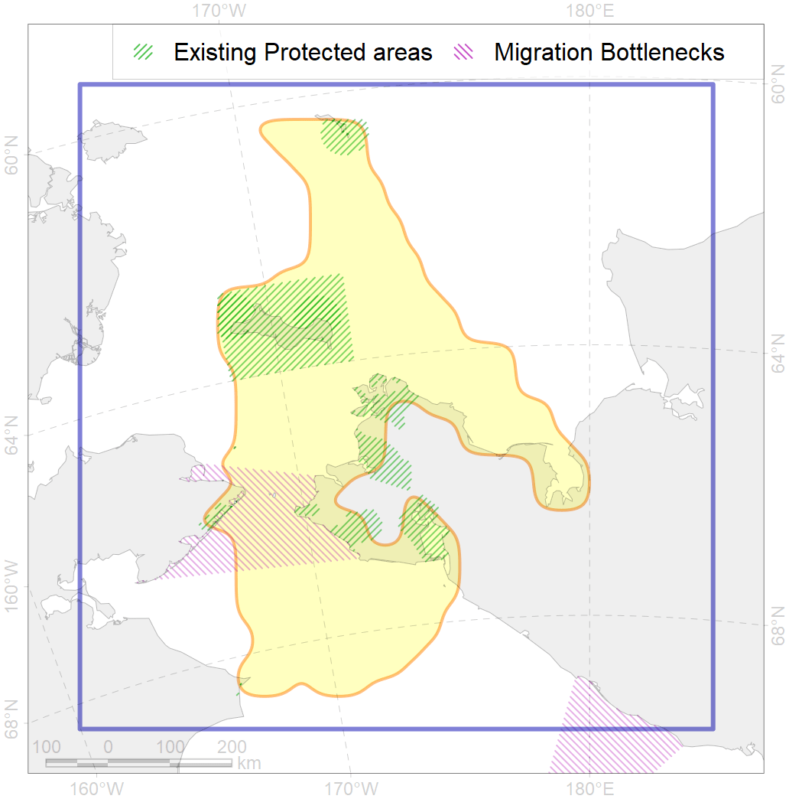
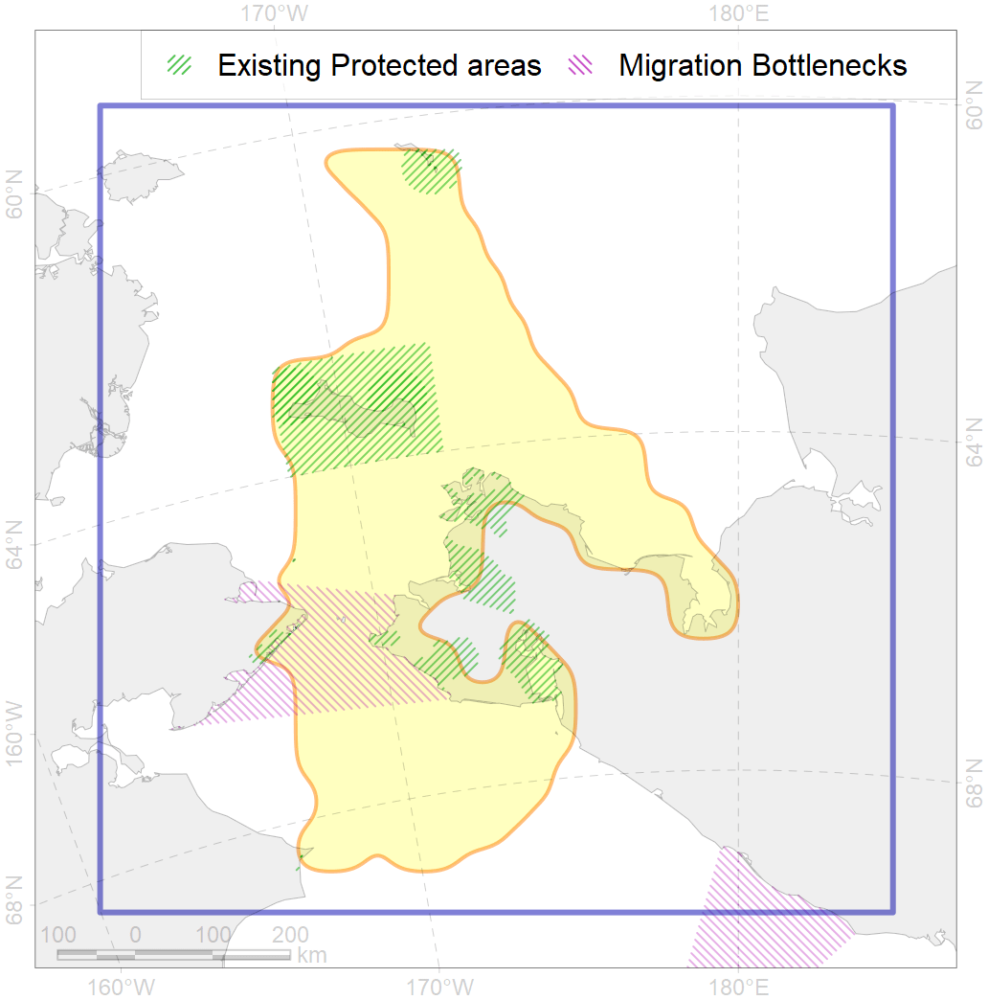

5
For more information regarding this PAC and to conduct custom spatial analysis using the PAC data or any spatial query, please consult Accenter.
 

4
CFs entirely within the PAC area
55
CFs at least 25% within the PAC area
53
CFs with at least 50% of their target achieved in the PAC
83
CFs with at least half of their target achieved in the PAC
| CF ID | CF Name | Proportion in the PAC | Conservation Target | Contribution to ArcNet Target Achievement | PAC’s Contribution to the Achieved Target |
|---|---|---|---|---|---|
| 7087 | I.3.1.1.2. Bering Strait Shelf valle | 100.0% | 49.7% | 191.2% | 100.0% |
| 3106 | Polynyas distribution in the North-Western Bering region | 100.0% | 12.0% | 833.3% | 100.0% |
| 7217 | East Chukotka kelp patches (27, 28) | 100.0% | 30.0% | 283.3% | 100.0% |
| 7230 | Kelp forests of St. Laurence I. | 100.0% | 30.0% | 333.3% | 100.0% |
| 7002 | Chirikov Basin benthic hotspot | 98.2% | 72.0% | 125.3% | 99.7% |
| 5111 | Killer whale summer feeding areas in Chukotka | 96.5% | 24.0% | 379.4% | 98.7% |
| 3107 | Polynyas distribution in the Southern Bering Region | 92.5% | 12.0% | 759.3% | 99.1% |
| 5062 | Humpback whale summer feeding areas in the Pacific Arctic | 88.6% | 24.0% | 351.2% | 97.3% |
| 7229 | Kelp forests of Kolyuchinskaya Bay | 86.1% | 30.0% | 254.0% | 96.6% |
| 4012 | Feeding/nursery area of the Bering cisco (Coregonus laurettae), Asian populations | 85.3% | 32.4% | 257.0% | 96.1% |
| 7085 | I.3.1.1. Bering Strait | 83.2% | 15.9% | 489.8% | 96.0% |
| 5022 | Beluga of the Eastern Chukchi Sea winter distribution | 81.1% | 24.0% | 316.7% | 96.5% |
| 7086 | I.3.1.1.1. Bering Strait shelf | 81.1% | 16.9% | 448.3% | 95.4% |
| 7005 | Northern Anadyr Gulf benthic hotspot | 79.2% | 72.0% | 96.7% | 95.8% |
| 6051 | Spectacled eider (Somateria fischeri) wintering grounds | 77.3% | 75.0% | 100.9% | 98.6% |
| 7003 | SE Chukchi Sea benthic hotspot | 76.3% | 72.0% | 96.3% | 95.9% |
| 7001 | St. Lawrence Island Polynya benthic hotspot | 74.0% | 72.0% | 96.8% | 96.2% |
| 6001 | Least Auklet (Aethia pusilla) breeding colonies | 73.9% | 36.0% | 204.6% | 81.5% |
| 6014 | Spoon-billed sandpiper (Calidris pygmaea) breeding sites | 71.4% | 96.0% | 74.4% | 71.4% |
| 5052 | Gray whale summer feeding areas | 63.0% | 36.0% | 165.8% | 76.2% |
| 6016 | Long-tailed duck (Clangula hyemalis) East Asian moulting&migration stopovers | 60.3% | 48.0% | 124.4% | 91.3% |
| 6013 | Spoon-billed sandpiper (Calidris pygmaea) breeding grounds | 57.1% | 72.0% | 70.7% | 70.5% |
| 6081 | Thick-billed murre (Uria lomvia hecheri) breeding colonies | 53.8% | 54.0% | 99.5% | 56.3% |
| 3018 | Marginal Ice Zone distribution in April in the Chukchi Sea LME | 53.7% | 12.0% | 428.1% | 87.6% |
| 6088 | Least Auklet (Aethia pusilla) breeding colonies buffer feeding area | 53.2% | 24.0% | 208.3% | 70.4% |
| 7011 | Core of the Beringian Province of the North Pacific zoogeographical region | 51.4% | 18.7% | 255.9% | 81.0% |
| 5017 | Beluga of the Eastern Hudson Bay winter core distribution | 50.3% | 24.0% | 199.7% | 97.1% |
| 7078 | I.2.1.2. Lagoons | 46.9% | 43.4% | 105.8% | 95.8% |
| 5044 | Bowhead whale of the Bering-Chukchi-Beaufort population winter core distribution | 45.4% | 48.0% | 92.0% | 91.0% |
| 1016 | Pacific Walrus Feeding Area | 44.7% | 72.0% | 60.8% | 51.1% |
| 6079 | Thick-billed murre (Uria lomvia arrra) breeding colonies | 44.2% | 72.0% | 61.3% | 57.1% |
| 6048 | Black-legged kittiwake (Rissa tridactyla pollicarius) breeding colonies | 44.0% | 64.8% | 67.3% | 48.9% |
| 5043 | Bowhead whale of the Bering-Chukchi-Beaufort population autumn core distribution | 43.0% | 72.0% | 59.6% | 58.4% |
| 6030 | Glaucous gull (Larus hyperboreus pallidissimus) breeding grounds | 42.4% | 12.0% | 350.9% | 59.1% |
| 4091 | Fish zoogeography, Arctic Region, Subarctic Transitional-Pacific Province | 42.1% | 13.4% | 287.3% | 82.0% |
| 1017 | Pacific Walrus haulouts | 42.0% | 72.0% | 55.2% | 53.9% |
| 8029 | Salt marshes of the Chukchi Sea LME | 41.6% | 30.0% | 112.2% | 84.4% |
| 7092 | I.3.1.6. Anadyr Gulf shelf | 40.6% | 10.7% | 326.7% | 70.2% |
| 6085 | Horned puffin (Fratercula corniculata) breeding colonies | 39.8% | 36.0% | 108.9% | 49.2% |
| 6050 | Spectacled eider (Somateria fischeri) moulting grounds | 37.4% | 36.0% | 103.9% | 73.1% |
| 5110 | Bowhead whale of the Bering-Chukchi-Beaufort population winter distribution | 36.8% | 28.8% | 118.0% | 80.5% |
| 2058 | Bearded seal whelping areas in the Bering Sea as predicted by MIZ distribution | 36.2% | 24.0% | 148.0% | 52.6% |
| 6077 | Common murre (Uria aalge inornata) breeding colonies | 36.2% | 54.0% | 66.7% | 41.6% |
| 6102 | Common murre (Uria aalge inornata) breeding colonies buffer feeding area | 33.5% | 36.0% | 86.1% | 51.2% |
| 1015 | Pacific Walrus Breeding Area | 33.4% | 24.0% | 129.6% | 61.9% |
| 6067 | Common eider (Somateria mollissima v-nigrum) wintering grounds | 29.9% | 67.2% | 44.4% | 36.7% |
| 4005 | Spawning areas of the Pacific Capelin (Mallotus villosus catervarius) in Alaska | 29.7% | 18.0% | 162.2% | 42.6% |
| 1019 | Pacific Walrus Winter Distribution | 29.7% | 24.0% | 115.0% | 61.4% |
| 6105 | Thick-billed murre (Uria lomvia hecheri) breeding colonies buffer feeding area | 29.2% | 36.0% | 79.9% | 39.4% |
| 1018 | Pacific Walrus Summer-Autumn Distribution | 28.7% | 24.0% | 112.3% | 48.0% |
| 6017 | Long-tailed duck (Clangula hyemalis) East Asian wintering grounds | 28.1% | 76.8% | 35.1% | 34.1% |
| 6103 | Thick-billed murre (Uria lomvia arrra) breeding colonies buffer feeding area | 27.8% | 48.0% | 53.7% | 40.5% |
| 9022 | polar bear denning areas of CS (Chukchi Sea) subpopulation | 27.2% | 64.8% | 40.8% | 39.9% |
| 3004 | Fast Ice distribution in the Chukchi Sea region | 27.0% | 6.0% | 417.1% | 62.8% |
| 6107 | Horned puffin (Fratercula corniculata) breeding colonies buffer feeding area | 25.3% | 24.0% | 98.0% | 38.2% |
| 2040 | Ringed seal molting areas in the Bering Sea | 23.5% | 24.0% | 83.4% | 63.3% |
| 2006 | Bearded seal whelping areas in the Bering Sea | 23.5% | 24.0% | 91.3% | 51.7% |
| 6074 | King eider (Somateria spectabilis) Pacific winetring grounds | 22.9% | 48.0% | 47.7% | 32.9% |
| 2054 | Spotted seal foraging areas | 22.2% | 12.0% | 167.0% | 32.9% |
| 5002 | Beluga of Anadyr winter distribution | 21.5% | 48.0% | 36.3% | 35.6% |
| 6100 | Black-legged kittiwake (Rissa tridactyla pollicarius) breeding colonies buffer feeding area | 21.3% | 64.8% | 31.1% | 31.1% |
| 6073 | King eider (Somateria spectabilis) Pacific moulting&migration stopovers | 20.7% | 48.0% | 43.0% | 37.3% |
| 6087 | Red-legged kittiwake (Rissa brevirostris) wintering grounds | 20.6% | 20.4% | 93.9% | 43.2% |
| 9004 | polar bear of the CS (Chukchi Sea) subpopulation distribution | 20.5% | 32.4% | 58.5% | 50.4% |
| 2043 | Ringed seal whelping areas in the Bering Sea | 19.3% | 24.0% | 73.9% | 42.5% |
| 2055 | Steller Sea Lion habitats of critical importance | 19.2% | 57.6% | 33.1% | 19.9% |
| 6039 | Ivory gull (Pagophila eburnea) Pacific wintering grounds | 18.8% | 21.6% | 80.6% | 60.4% |
| 6011 | Brent goose (Branta bernicla nigricans) Asian breeding&moulting grounds | 18.5% | 18.0% | 101.8% | 37.5% |
| 7077 | I.2.1.1. Coastal domain | 17.8% | 26.8% | 52.2% | 48.4% |
| 4025 | Feeding/migration area of the Coho Salmon (Oncorhynchus kisutch) | 17.3% | 6.0% | 258.4% | 27.6% |
| 2035 | Ribbon seal foraging areas in the Chukchi Sea | 16.8% | 12.0% | 126.6% | 35.0% |
| 4004 | Range of the Pacific Capelin (Mallotus villosus catervarius) | 16.6% | 3.0% | 508.3% | 37.1% |
| 4050 | Range of the Pollock (Theragra chalcogramma) | 16.4% | 6.0% | 250.0% | 36.5% |
| 2045 | Ringed seal whelping areas in the Chukchi Sea | 16.2% | 24.0% | 60.5% | 34.3% |
| 4044 | Range of the Pacific cod (Gadus macrocephalus) | 16.1% | 3.0% | 484.7% | 33.0% |
| 4034 | Feeding area of the Taranetz’s Char (Salvelinus taranetzi) | 16.1% | 32.4% | 45.6% | 27.1% |
| 4026 | Feeding/migration area of the Chinook Salmon (Oncorhynchus tshawytscha) | 16.0% | 6.0% | 240.9% | 26.2% |
| 2034 | Ribbon seal foraging areas in the Bering Sea | 15.1% | 6.0% | 231.6% | 37.5% |
| 4023 | Feeding/migration area of the Pink Salmon (Oncorhynchus gorbuscha), native distribution | 14.8% | 6.0% | 225.7% | 34.0% |
| 7090 | I.3.1.4. Middle and outer shelf of eastern Bering Sea | 14.7% | 3.7% | 368.5% | 37.5% |
| 4042 | Range of the Saffron cod (Eleginus gracilis) | 14.5% | 6.0% | 221.2% | 32.6% |
| 7081 | I.2.1.5. Shelf valleys | 14.4% | 20.3% | 70.0% | 34.6% |
| 4033 | Feeding area of the Dolly Varden (Salvelinus malma) | 14.0% | 12.0% | 112.9% | 23.2% |
| 2032 | Northern Fur seal range | 13.2% | 7.2% | 168.9% | 32.3% |
| 6045 | Stellers eider (Polysticta stelleri) Pacific moulting&migration stopovers | 13.2% | 52.8% | 24.0% | 22.3% |
| 5106 | Bowhead whale of the Bering-Chukchi-Beaufort population spring distribution | 13.1% | 57.6% | 19.9% | 19.7% |
| 2008 | Bearded seal whelping areas in the Chukchi Sea | 12.3% | 24.0% | 45.8% | 30.5% |
| 4013 | Feeding/nursery area of the Bering cisco (Coregonus laurettae), Asian populations | 12.3% | 32.4% | 27.7% | 26.6% |
| 7055 | cold corals of the Pacific | 12.0% | 50.0% | 23.8% | 20.1% |
| 4070 | Local forms of the White-Sea herring (Clupea pallasii) | 11.7% | 24.0% | 44.7% | 25.2% |
| 7080 | I.2.1.4. Shelf plains | 11.7% | 3.8% | 276.3% | 31.6% |
| 6078 | Common murre (Uria aalge inornata) wintering grounds | 10.7% | 18.0% | 54.9% | 34.8% |
| 6084 | Thick-billed murre (Uria lomvia) Pacific wintering grounds | 10.7% | 24.0% | 41.2% | 34.8% |
| 4006 | Feeding/nursery area of the Pacific rainbow smelt (Osmerus dentex) | 10.1% | 18.0% | 51.1% | 19.3% |
| 4018 | Feeding area of the Vendace, Least cisco (Coregonus sardinellа), Euro-Asian populations | 9.9% | 24.0% | 39.0% | 20.5% |
| 6066 | Common eider (Somateria mollissima v-nigrum) breeding&moulting grounds | 9.9% | 33.6% | 27.9% | 27.4% |
| 4024 | Distribution of the Chum Salmon (Oncorhynchus keta) | 7.8% | 6.0% | 116.7% | 13.8% |
| 5105 | Bowhead whale of the Bering-Chukchi-Beaufort population autumn distribution | 7.2% | 28.8% | 21.8% | 17.1% |
| 4058 | Range of the Arctic flounder (Liopsetta glacialis) | 6.7% | 6.0% | 98.1% | 12.6% |
| 3104 | Polynyas distribution in the Notrh-Eastern Bering region | 6.3% | 12.0% | 32.3% | 27.3% |
| 5117 | Beluga of the Eastern Chukchi Sea autumn core distribution | 6.2% | 24.0% | 19.0% | 11.0% |
| 4065 | Range of the Pacific Halibut (Reinhardtius hippoglossoides matsuurae) | 6.0% | 3.0% | 181.4% | 18.7% |
| 5019 | Beluga of the Eastern Bering Sea winter distribution | 6.0% | 48.0% | 10.2% | 10.1% |
| 4052 | Range of the Fourhorn Sculpin (Myoxocephalus quadricornis), American populations | 5.8% | 3.0% | 182.1% | 12.6% |
| 5116 | Beluga of the Eeastern Beaufort Sea autumn core distribution | 5.7% | 24.0% | 22.0% | 16.1% |
| 7044 | Western Chukchi transitional zone | 5.0% | 13.6% | 36.1% | 15.7% |
| 2038 | Ringed seal foraging areas in the Chukchi Sea | 4.8% | 24.0% | 19.6% | 7.7% |
| 5047 | Fin whale summer feeding areas in the Bering Sea | 4.3% | 20.4% | 17.8% | 15.6% |
| 5112 | Arctic Cetaceans (beluga, bowhead, narwhal) winter habitats as predicterd by MIZ | 3.2% | 40.0% | 7.3% | 6.0% |
| 4053 | Range of the Fourhorn Sculpin (Myoxocephalus quadricornis), Euro-Asian populations | 3.0% | 3.0% | 94.9% | 5.7% |
| 2060 | Ribbon seal whelping areas as predicted by MIZ distribution | 2.6% | 12.0% | 21.0% | 7.2% |